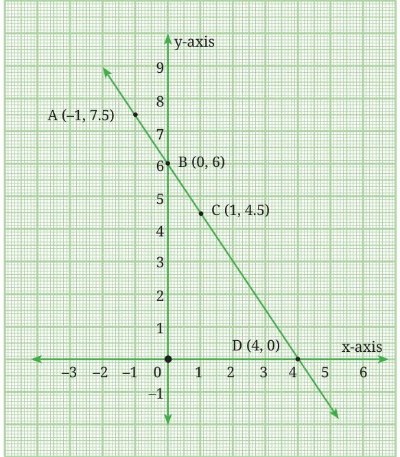
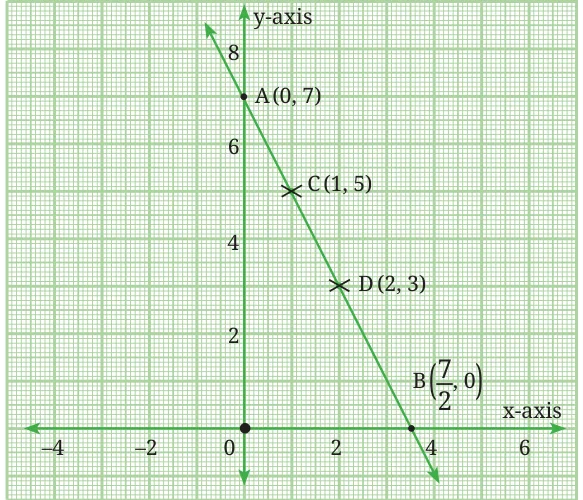
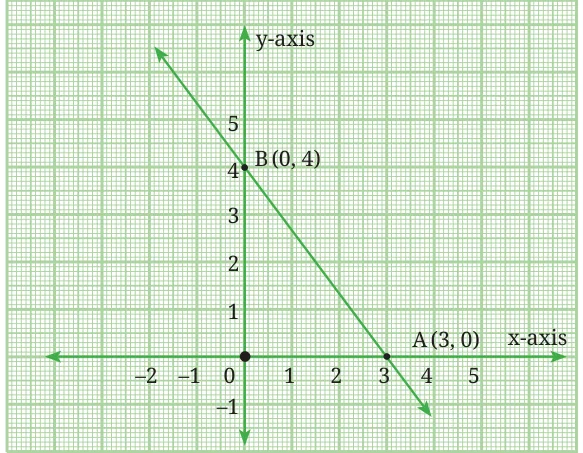
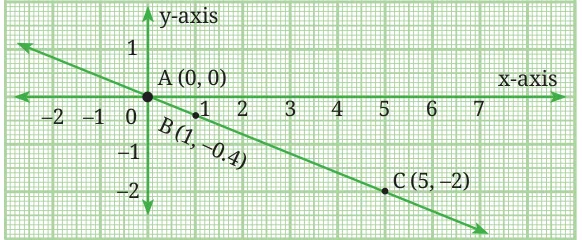

In earlier grades, we have seen how to solve linear equations in one variable. What can we say about the solution of a linear equation involving two variables?
13.2.1 Algebraic Meaning of Solution
A solution of a linear equation in two variables is a pair of values of \(x\) and \(y\) which satisfy the given equation.
Let us consider the equation \(3x + 2y = 12\).
Here, \(x = 2\) and \(y = 3\) is a solution because substituting the values of \(x\) and \(y\) into the given equation satisfies the equation.
Note that, \(3x + 2y = (3 \times 2) + (2 \times 3) = 12\).
A solution can be written compactly as a pair of numbers. For example, the solution \(x = 2\) and \(y = 3\) can be written as (2, 3). The order of the numbers in this pair matters: the first number is the x-value, and the second number is the y-value. Hence we call this an ordered pair.
Similarly, (4, 0) is also a solution of the equation \(3x + 2y = 12\) since substituting \(x = 4\) and \(y = 0\) leads to \(3x + 2y = (3 \times 4) + (2 \times 0) = 12\).
What about the ordered pair (1, 3)?
We see that \(3x + 2y = 3 \times 1 + 2 \times 3 = 9 \ne 12\). So, (1, 3) is not a solution.
Think and Reflect
Are \(\left(1, \frac{9}{2}\right)\), (0, 6), (4, 1) and \(\left(\frac{1}{2}, \frac{21}{4}\right)\) solutions of the equation \(3x + 2y = 12\)?
Can you find any other solution? How many solutions can you find?
Suppose we are given a linear equation in two variables. For any value \(u\) that we assign to \(x\), we can find a value \(v\) for \(y\) such that \((u, v)\) is a solution. We first substitute \(u\) for \(x\) in the equation. This gives us a new linear equation in \(y\) that can be solved to find \(v\). This allows us to generate an infinite number of solutions to the original equation.
13.2.2 Geometric Visualisation of Solutions
Consider all the solutions of a linear equation in two variables, expressed as ordered pairs. What do we get when we plot the points corresponding to these ordered pairs?
The equation \(3x + 2y = 12\) can be rewritten as
\(2y = -3x + 12\) or \(y = -\frac{3}{2}x + \frac{12}{2}\) which is the same as \(y = -\frac{3}{2}x + 6\)

We have already seen in the chapter on Linear Polynomials that plotting the solutions of an equation of the form \(y = mx + d\) leads to a straight line joining them. Every solution \((x, y)\) of the equation is a point on the line.
Clearly the solutions of \(y = -\frac{3}{2}x + 6\) are the same as those of \(3x + 2y = 12\). Hence the graph of \(3x + 2y = 12\) is the same as that of \(y = -\frac{3}{2}x + 6\).
Example 2: Find any two solutions of \(2x + y = 7\). Draw the graph of this equation. Use the graph to find 4 more solutions.
When we substitute \(x = 0\) in the equation, we get \((2 \times 0) + y = 7\), that is, \(y = 7\). Hence one solution is (0, 7). By substituting \(y = 0\), we get \(2x + 0 = 7\), that is, \(x = \frac{7}{2}\). Thus, \(\left(\frac{7}{2}, 0\right)\) is also a solution.
We can represent these solutions or ordered pairs in the form of a table.
| \(x\) | 0 | \(\frac{7}{2}\) |
|---|---|---|
| \(y\) | 7 | 0 |
Using these two points, we can draw the graph of the equation.

From the graph, we see that (1, 5), (2, 3), (3, 1), \(\left(\frac{3}{2}, 4\right)\) are also solutions of \(2x + y = 7\).
Note that an easy way of identifying two points on a line is to substitute \(x = 0\) in the linear equation and obtain the corresponding value of \(y\). This will give us the point where the line intersects the y-axis. Similarly, we can substitute \(y = 0\) and obtain the corresponding value of \(x\). This will give us the point where the line intersects the x-axis.
Example 3: Find any two solutions for each of the following equations and draw their graphs:
- \(4x + 3y = 12\)
- \(2x + 5y = 0\)
Solution:
(i) Substituting \(x = 0\) in the equation, we get \(3y = 12\), that is, \(y = 4\). So (0, 4) is a solution of the given equation. Similarly, by substituting \(y = 0\), we get \(x = 3\). Thus, (3, 0) is also a solution.

(ii) Substituting \(x = 0\), we get \(5y = 0\), that is, \(y = 0\). So (0, 0) is a solution of the given equation. To get another solution, substitute \(x = 1\). The corresponding value of \(y\) is \(-\frac{2}{5}\). So, \(\left(1, -\frac{2}{5}\right)\) is also a solution. In fact, we can substitute any value for \(x\) and obtain a corresponding value of \(y\). For example, substituting \(x = 5\) we obtain \(y = -2\). Let us represent these solutions or ordered pairs in the form of a table.
| \(x\) | 0 | 1 | 5 |
|---|---|---|---|
| \(y\) | 0 | \(-\frac{2}{5}\) | \(-2\) |
When we plot the ordered pairs A(0, 0), \(B\left(1, \frac{-2}{5}\right)\) and C(5, −2) we see that they lie on a line.

Example 4: In the equations shown below, \(a\) and \(b\) are unknown numbers.
\(3ax + 4y = -2\)
\(2x + by = 14.\)
If (−3, 4) is the solution of both equations, find the values of \(a\) and \(b\).
Solution:
Step 1: Substitute (−3, 4) into the first equation, (that is, \(x = -3\) and \(y = 4\)).
\(3a(-3) + 4(4) = -2\)
or \(\quad -9a + 16 = -2\)
or \(\quad -9a = -18\)
or \(\quad a = 2\)
Step 2: Substitute (−3, 4) into the second equation.
\(2(-3) + b(4) = 14\)
or \(\quad -6 + 4b = 14\)
or \(\quad 4b = 20\)
or \(\quad b = 5\)
Think and Reflect
Four friends—Ranju, Meena, Farhan, and Toshi—are solving problems.
Ranju: I noticed something! If \(c = 0\) in the standard form of a line \(ax + by + c = 0\), then the line must pass through the origin. Look, if I substitute \(x = 0\) and \(y = 0\), in equation \(ax + by = 0\), the equation is satisfied. So, the origin lies on the line! We can also say that the line passes through the origin.
Farhan: Let us try for the equation \(2x + 3y = 0\). Here \(a = 2\), \(b = 3\) but \(c = 0\). If we substitute \(x = 0\), then we get \(3y = 0\) or \(y = 0\). This means (0, 0) lies on the line. So yes, this line passes through the origin.
Toshi: Suppose our equation has \(b = c = 0\), say, \(5x = 0\). This becomes \(x = 0\) which is the equation of the y-axis. And the y-axis passes through the origin.
Meena: And if we take \(a = c = 0\), say, \(7y = 0\), that means \(y = 0\), which is the equation of the x-axis that also passes through the origin.
So, they conclude: Whenever \(c = 0\), the line \(ax + by + c = 0\) will always pass through the origin, irrespective of the values of \(a\) or \(b\). Do you agree with them?